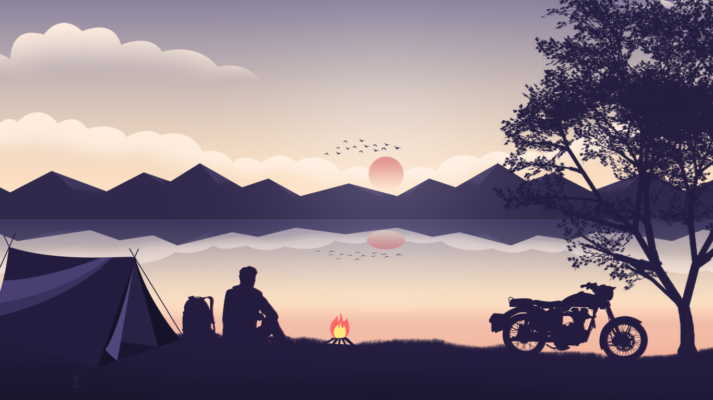
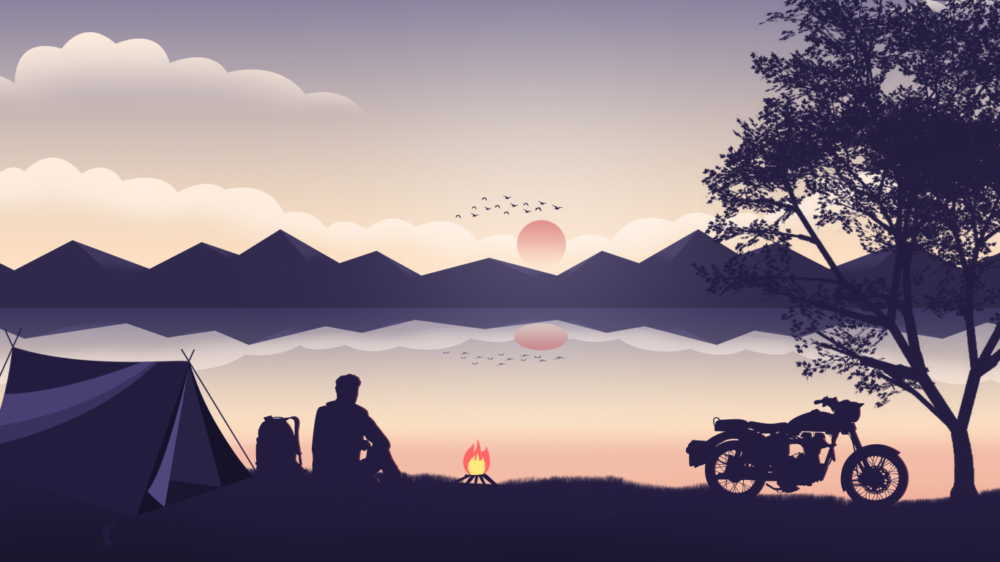

The Walk
The walk from Monterosso to Riomaggiore will take you approximately two hours, give or take an hour depending on the weather conditions and your physical shape.
The walk from Monterosso to Riomaggiore will take you approximately two hours, give or take an hour depending on the weather conditions and your physical shape.
Cinque Terre comprises five villages: Monterosso, Vernazza, Corniglia, Manarola, and Riomaggiore.
On the northwest cost of the Italian Riviera, north of the city La Spezia.
The Walk is free!